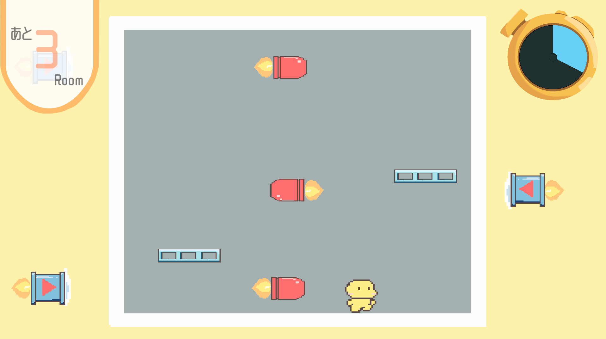
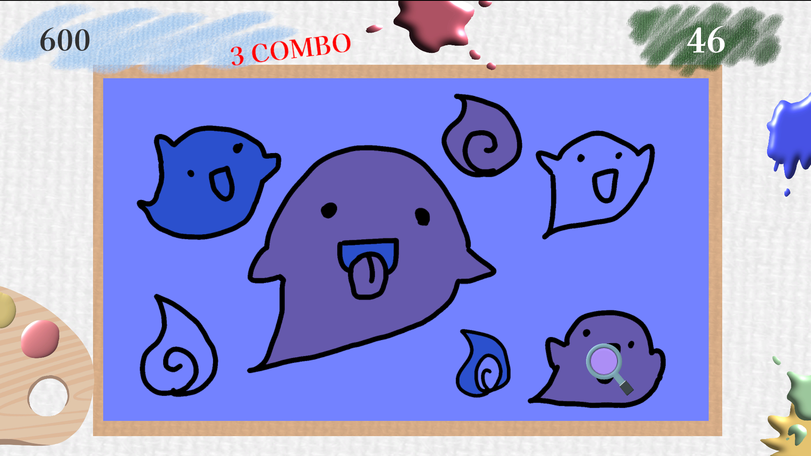
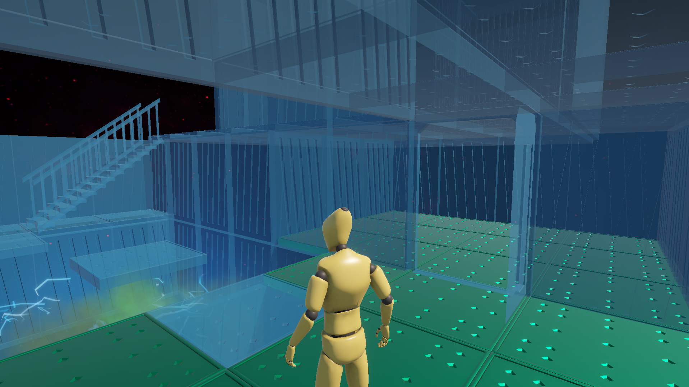
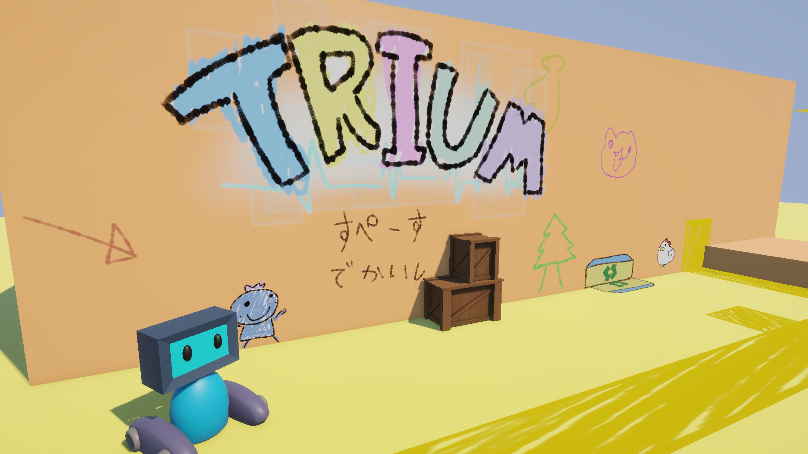
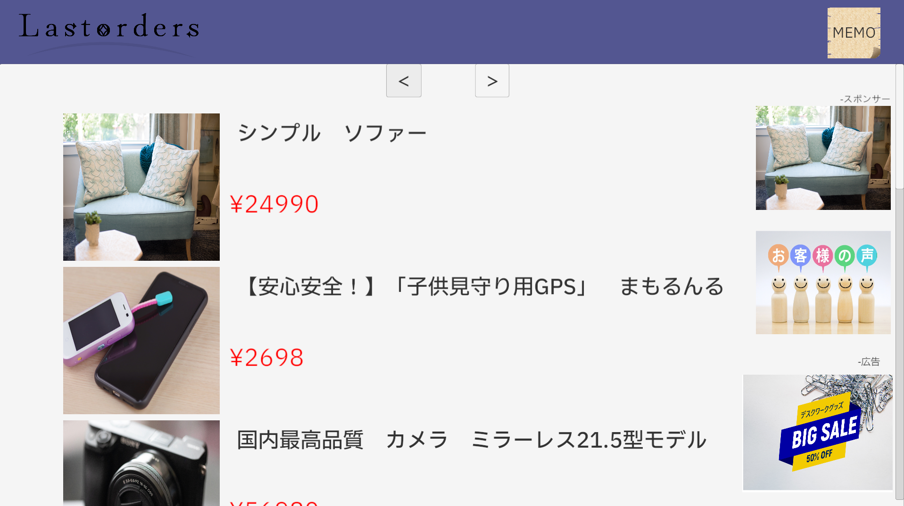
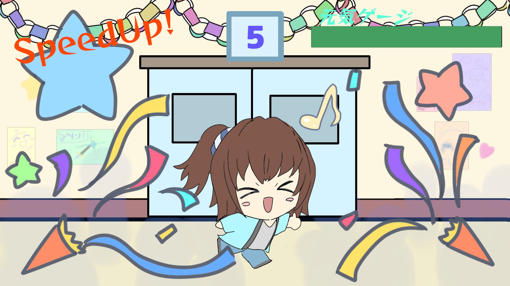
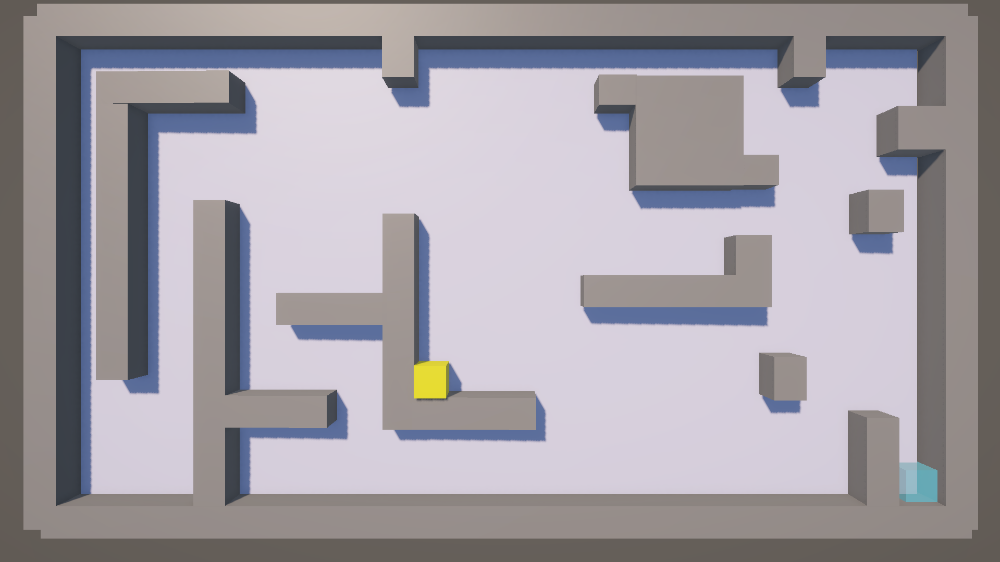
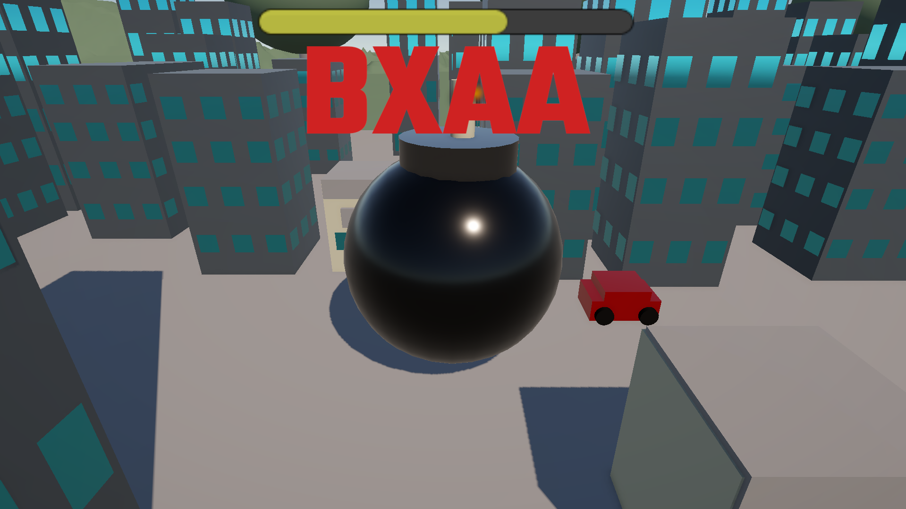

制作物

DICEWARS（現在急ピッチで開発中）
unityで開発中の3Dゲーム。現在は個人開発中。今後チームに切り替わる可能性あり。
夏休みのインターンシップで学んだことを活かすべく作成中のゲーム。まず、インターンシップで設計の重要性を学びこのゲームは初めて資料や設計から作成した。
クラス図を作りそれを元に作ったりシェーダーやアニメーションのボーン等について学び実践する予定。また、メモリの重要性について個人的に質問して色々勉強させていただいたので
今回は大量の敵が出現するというタワーディフェンスのようなゲームにもなるので色々模索した結果オブジェクトプールという手法を用いることにした。この方法なら事前にロードで作ってあるものを持ってきて破壊や生成を行わずにリサイクルするため
大量生成の負荷を削減できると思い採用。しかしはじめて設計を元に開発しているが当初作成した設計書やクラス図で実際にやろうとすると不足要素に後から気づいたり
うまくいかない設計があってしっかり先を遠くまで見越した設計が重要なんだと現在の作成途中経過で学んだ。関係ないが今回設計の段階で世界観とかを考えたがこれをこういう表現で実装しようとか考えるはすごく楽しかった。
生成AIを一部使用した作品です。（chatGPTによる技術調査や技術決定選択補助、設計や世界観の相談、デバック補助）
ゲームの説明
サイコロを操作しダイスロールで移動！出た目ですごろくを進め止まったマスの効果を使って迫りくる敵を殲滅せよ！
PC操作:
マウス移動...視点移動、エイム
左クリック...武器発射、ダイスロール移動、選択等
Q,Eキー...取得したアクティブスキルの発動
spaceキー...緊急回避
（コントローラーに対応しておりません。また今回は対応する予定もありません。）
Unity / C#

WorpRoom!(ver.1.3)
Unityで制作した2Dアクションゲーム。サークルでの共同開発。
東京ゲームダンジョン13出展作品でかなりの好評の声を受けさらに良くする為に改良を検討。
本イベントで試遊して頂いた方にアンケートにご協力頂きその意見を元に現在改良中。
主にゲームの基本的構造のプログラム全般、仕掛けづくり、ステージ制作、イラストを担当。仲間にはステージ作りを依頼。
メンバーが初心者が多いので簡単に作れるようギミックやステージのテンプレートを作り、配置するだけで作れるようにしたり
ランダムでステージが切り替わる使用上テストしやすいように工夫した。
また、膨大な部屋数でも重くならないようにプレハブ化し、プレイヤーがワープするのではなくリストに登録した部屋がおなじ場所でランダム出現するようにすることで
見せかけでありながらも体験を損なわずかつ最適化するように設計。
反省点として初めてのチーム開発で分からないことが多かったがmainを直接いじるのは良くなかったと思った。当時はよくわからなかったが今ならプルリクエストやブランチの使えたらよかったと思う。次からはそうする。
生成AIを一部使用した作品です。（chatGPTによるコーディング補助、デバック補助）
ゲームの説明
次々とワープする不思議な部屋で決まった回数ワープをこなしクリアを目指す瞬間アクションゲーム。
操作:ASWD...移動,カーソル移動
:スペースキー...ジャンプ,決定
:バックスペースキー...前の画面に戻る
※ステージセレクトでDelキーを連打や長押しでステージの全開放やリセットを行える開発者用コマンドがあります。ご自由にご利用ください。
モード:ノーマル...ステージクリア型。レベルとステージを選択することで部屋の難易度とクリアに必要なワープ回数が変化。
:エンドレス...スコアタ型。すべての難易度が出現。失敗するまで無限に続く。現時点では未実装だがランキングも実装したい。
Ver.1.1の修正内容
・隠しボス戦(3-3の最後)でいきなり攻撃が現れなくなり攻撃箇所に警告が出るようになりました。
・カメラシェイクを使う仕掛けが途中でデストロイされることでおかしな位置でカメラが止まりゲームが進行するバグを修正しました。
・あまりに理不尽な難易度の部屋を頂いたお声を元に一部修正、削除しました。
Ver.1.2の修正内容
・細かい部屋の微修正を行いました。
Ver.1.3の修正内容
・隠しボス戦にてボスのせいで見えずらいという意見を基に何かと重なっている時は半透明になるように修正しました。
・隠しボス戦にてすでにやられてリザルトにいるのに攻撃が行われ続けタイマーが減り進行してしまうバグを修正しました。
・とげオブジェクトの判定を小さくし理不尽でシビアすぎる判定を修正し縮小を行い多少の接触は許容し簡易にしました。
・スペシャルサンクスに試遊いただいたプレイヤーの
今後のアップデートの予定
・ステージやギミックの新規追加
・難易度調整
・部屋切り替えの後一瞬だけすべてを静止させて頭の中で処理する時間が少しはほしいとのご意見を元にwarpの仕様の変更を検討中
Unity / C#
制作年月：2025年12月~現在運用中

hitoitopallet
Unityで制作した2Dゲーム。個人開発。
今年度の学園祭にも出展することとなり「WarpRoom!」を前年度の出展に加え展示予定だったが
やはり学園祭は去年も多くの年齢層やプレイヤー層の方が来たのでアクションゲームだけでは難しすぎて楽しめないお客さんもいると考えた。
そこで今回もターゲット層をアクションゲームではない、苦手なプレイヤー層にも楽しめるゲームをテーマに作った。
ゲームは塗り絵がテーマで塗り絵の中で一つの領域でしか使われないただ一つだけの色を探し出しそこを押すという非常にシンプルな間違い探しのようなゲーム。
今回のゲームも運用がいくらでもできるようにしており、WarpRoom!の時のように塗り絵を作って適切な難易度の配列に入れるだけで問題を追加できる。
色を判別しテクスチャ内の黒色を探査しそこの中の領域を自由に色を塗れるなど自由に塗り絵を作り問題を生成できるような物を事前に作ってあるので
塗り絵ごとに塗り領域や色選択アルゴリズムを作らなくても自動で塗り領域を調べて一つの色（正解）を生成し領域内の色を2回以上使って塗り領域数÷４種類の色（2~8色）で勝手に塗ってくれる。
今回はここのテクスチャの識別や領域探査が難しくAIに助けてもらった。序盤はAIが今回のゲームに適さない方法で提示したりしてたのでAIの案のダメ出しと今回のゲームに合わない理由やアルゴリズムを伝え繰り返して
簡単に今後も問題を誰でも作問できるようにできた。次はこのコードをしっかりと理解して自分で問題をエディットできる機能をゲーム内に作れたらと思っている。
このゲームは学内に設置してある私のサークルで管理しているアーケードランチャー台にも展示するためにコントローラー対応も行ったが展示台のアーケードコントローラーとの整合性を取るのに苦労した。
普通のコントローラーならスニーク入力でカーソルの速度を落としたり出来るがそのアケコンでは0か1かの出力しかできないため微調整が難しくなっている。
なのでVer1.1では設定項目にコントローラーカーソルの感度を作りせめて遊びやすい速度で遊べるように解決ではないが軽減の修正を行った。
生成AIを一部使用した作品です。（chatGPTによるコーディング補助、デバック補助、隠し難易度の塗り絵の生成）
ゲームの説明
塗り絵の世界で色探し！一回しか使われていない色を探し出そう！意外と難しい...！？
PC操作:マウス移動...カーソル移動
:左クリック...選択,決定
:右クリック...（ゲーム中のみ）ポーズ画面
コントローラー操作
：左スティック...カーソル移動
:A（機種によってはB）...選択,決定
:pauseボタン...（ゲーム中のみ）ポーズ画面
Ver.1.1の修正内容
・一部コントローラーで正しく動作しないバグを一部修正しました。
・設定項目にコントローラーの感度を追加しました。
・色決定アルゴリズムを見直し、色の数に偏りを減らすように修正しました。
今後のアップデートの予定
・問題の新規追加
・難易度調整
・塗り領域の最小面積範囲のテストを行い微調整
・ゲーム内で作問できるエディット機能を作りたい
Unity / C#
制作年月：2027年9月一週間

DiverDown（製作中）
3D探索アクションゲーム。個人製作。
プレイヤーは研究所の実験体被験code「DIVER」というダミー人形を操作して研究所の秘密を求め脱走を試みます。
地形をすり抜けるという簡単なアクションを根幹に作ったがかなり苦戦している。
例えば分厚い壁をすり抜けている時に解除したらどうするかなどの処理に追われていて中々ゲーム的な制作が進行しないでいる。
タグやレイヤーを用いてすり抜けの対象などを判定できるように設計。この後にどんなギミック作ってもタグレイヤーに気を付ければ問題なし。ちなみにタイトルは私の好きな漫画のとある能力から。
生成AIを一部使用した作品です。（chatGPTによるコーディング補助、デバック補助）
ゲームの説明
地形をすり抜けられるキャラを操作して研究所の脱走を目指す３Ｄ探索型ミステリーアクションゲーム。
操作:ASWD...移動
:左クリック...ダイブ（地形すり抜け）
:spaceキー...ジャンプ
:Eキー...使う、ドアを開ける
現状制作中なので説明がないのでここに補足。始まったらダイブを使用することでゲームを進行できます。緑の床はすり抜け不可。変なビリビリした煙に当たると死ぬ。ゴールも何もない。抜けすぎると無限落下する。
Unity / C#
制作年月：2027年4月~現在（現在他のプロジェクト進行中のため一時停止中）

TRIUM
まさかの2Dと3Dが融合したアクションパズルゲーム
個人製作。就活生からの質問で飽きるほど聞いた「2Dと3Dはどっちが評価がいい？」という質問にビビッと来てじゃあそのどちらでもあればいいじゃないかと思い制作。
設計段階では２Ｄプレイヤーもリジッドボディを使用する予定だったが３Ｄ面を自由に移動できたら面白そうという思いつきだけで専用の重力システムをプログラムするハメに。
また他にも２Dの映像を３D面に投射するだけのアイデアもあったがせっかくなら２D、３D、相互に干渉できたら面白そうという思いつきだけで両者の空間を一つの空間に作るハメに。
面移動、重力方向変更、２つのカメラこの要素が移動に干渉するので２Dキャラのコードの複雑化が避けられなかったのが課題点。がそれでもロボットと落書きのキャラ二人が協力して進むというコンセプトをうまく実装できたのはすごくよかった。
デバックの解説や調べもののみにAIは使用されています。
ゲームの説明
平面世界の落書き、ウォードと迷子のロボット、ロドの次元の違う二人を操作して力を合わせてゴールを目指す新ジャンル2D3Dアクションパズル！
操作:ASWD...「ロド」移動,
:十字キー...[ウォード]移動
:spaceキー...「ウォード」ジャンプ
:Zキー...「ロド」デンジプル（オブジェクト引き寄せ）
:Rキー...カメラ切り替え
※現状ステージが一つしかないですが今後ギミックなどいろいろブラッシュアップしていく予定。
Unity / C#
制作年月：2027年6月 一週間

Lastoreders
異変が起きる通販で異変を避けながら8つのお使い（？）をこなす高難易度８番ライクホラーゲーム。
個人製作。少しづつ制作に慣れてきてリストや構造体、クラスをうまく使えば通販を再現したゲームが作れるのでは？と思い制作。
しかしそう簡単にはいかず何度もAIにダメ出しされ修正しました。特に根底となるページ作りではまず登録された表示物の構造体をリストで登録し
それをページ切り替えで切り替えたり商品をクリックしたらその商品の詳細ページの中身を構造体として登録された文章や画像を呼び出す処理をしているため
異変による出力の変更などと相性が悪く相互性を持たせるのにすごく苦労した。それとその構造体の中身の登録、商品作りにすごく時間がかかった。
生成AIを一部使用した作品です。（chatGPTによるコーディング補助、デバック補助、photodirector内の画像編集AI）
ゲームの説明
異変があったら左のページ、異常なしなら右のページ。通販を探索してメモに残された8つの商品を購入してこの通販の謎に迫れ。「あなたに明日をお届け。」
コントローラー操作：左スティック…カーソル移動
A(B)ボタン…決定
PC操作:マウス移動…カーソル移動
左クリック…決定
Unity / C#
制作年月：2026年12月~2027年8月

いわふぇすランカー！
次々に出されるミニゲームをクリアして限界に挑む某瞬間アクションゲームのようなゲーム。
個人製作。学園祭の「いわふぇす」を盛り上げるべく作成し展示したゲーム。ちいさなお子様にも大人気！
ただし難易度と視認性が課題。素材はほぼ全て手書きであるがポップでゆるくキテレツな雰囲気を出そうとした結果わかりずらかったり、
スクロールを使うミニゲームでは視認性が悪く目視が難しい。そのうえ、期限に追われテストプレイを怠ったため自分ならできるけど他人が0からクリアする時に必要な情報等の欠落が激しい。
プログラム以外のことで大きく学びを得られた作品でした。
しかし、プログラムでは配列を活用した方法を思いつき沢山のミニゲームを一つのゲームの流れとして確立させられた。この方法は今後の他のゲーム作成でも応用しています。
生成AIを一部使用した作品です。（chatGPTによるコーディング補助、デバック補助）
ゲームの説明
連続で出題されるミニゲームをクリアするゲーム！いかに素早く判断できるかが攻略のカギ。何度もリトライしてハイスコアを目指そう！
PC操作:十字キー＆スペースキー…ミニゲームに対応した操作。それを何に使うのか素早く判断するのもこのゲームの肝。
（コントローラーに対応しておりません）
Unity / C#
制作年月：2026年8月～2026年10月

labyrinth the core
シンプルな迷路パズルゲーム。
個人製作。学園祭の「いわふぇす」を盛り上げるべく作成し展示したゲーム。普段ゲームに触れないお客様にもわかりやすく多くの方にプレイして頂きました。
他の自作ゲームの「いわふぇすランカー」の影でひっそりと並行制作していたゲーム。「もしかしたらアクション操作のゲームが苦手な人もいるかもしれない」と考え急遽制作したためクオリティとしては低め。
アルゴリズムもシンプルでただ壁をレイヤーかタグだったかで検知し壁まで移動。それを１カウントとして最短手でゴールオブジェクトに接触でクリア。細かいカウントのルール（ある一定距離以下動いたときなどをカウントに含めない等）に関しては当時の私には難しかったのでAIに協力してもらった。次は自分でできるようになりたい。
生成AIを一部使用した作品です。（chatGPTによるコーディング補助、デバック補助）
ゲームの説明
カベにぶつかるまで止まらないキューブを操作して迷宮から抜け出そう！君は何手でクリアできるかな！？最短手を探してみよう！
PC操作:十字キー…キューブの移動、カーソル移動
:スペースキー…リトライ、決定
（コントローラーは非推奨だが学校の展示デバイスでのXboxコンフィグアーケードコントローラーでの実行確認済み。switch非対応確認済み）
Unity / C#
制作年月：2026年10月 一週間

コマンドボム
表示されるコマンドを正確に素早く入力するスリリングなハイスピードミニゲーム
個人製作。3D作品になれるべく練習として見た目は3Dに。blenderによるモデリングは少しやって断念。
textの表示がかなり悪いところが反省点。修正したい。かなり前に作ったが校内に展示して頂き、入学説明会などでも新入生が楽しんでくれているそう。
生成AIを一部使用した作品です。（chatGPTによるコーディング補助、デバック補助）
ゲームの説明
時間内に表示されるコマンドを素早く入力し続けて爆弾を大きくし大きくすればするほど入力成功時高得点！一度間違えたら即爆破！素早く入力することでスコアアップ！正確性と素早さの駆け引きがスリリング。
コントローラー操作:ABXY...ABXYコマンド入力
PC操作:ZXCVキー...ABXYコマンド入力
（コントローラーでのプレイを想定していますがPCでもプレイ可能）
Unity / C#
制作年月：2025年3月~2026年4月